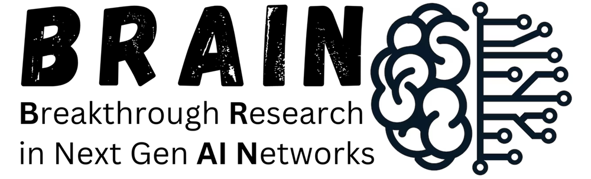
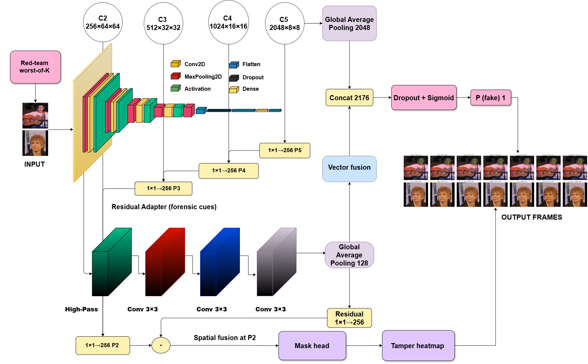
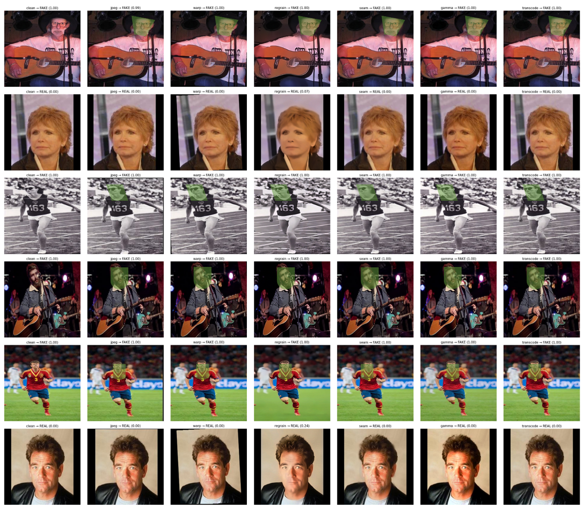
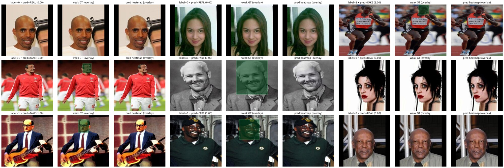
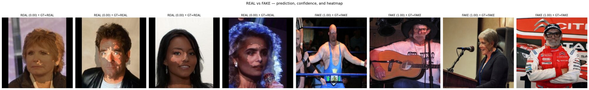

Attack-Aware Deepfake Detection under Counter-Forensic Manipulations
A dual-stream forensic detector that couples worst-of-K adversarial exposure with auditable spatial evidence, remaining reliable after compression, resampling, regraining, relighting, and platform transcoding.
1King Fahd University of Petroleum & Minerals, Saudi Arabia
2SDAIA-KFUPM Joint Research Center for Artificial Intelligence, Saudi Arabia



Abstract
Forensics that survives the edit
The rapid proliferation of AI-generated and manipulated visual content requires forensic detectors that remain reliable after routine processing and deliberate counter-forensic modification. This work presents an attack-aware deepfake detector that combines pretrained semantic features with fixed forensic residual responses through a lightweight fusion module and produces weakly supervised spatial evidence maps. During training, a worst-of-K strategy selects the most damaging transformation from sampled JPEG compression, resampling, regraining, seam processing, color adjustment, and transcoding operations. At inference, predictions from low-cost randomized views are aggregated to reduce sensitivity to processing variations while preserving localized evidence. Five independently seeded runs, controlled component analyses, and matched ResNet-50 and Xception comparisons assess stability and robustness. The experiments identify worst-of-K exposure as the main contributor to counter-forensic operating robustness, while the semantic stream provides the strongest standalone representation and the residual stream remains independently predictive. The resulting heatmaps indicate where forensic evidence is concentrated without requiring pixel-accurate manipulation masks.
Method
Built for the attack surface
The detector separates semantic understanding from manipulation-sensitive residual evidence, then trains on whichever sampled transformation is most damaging to the current mini-batch.
Semantic content
An ImageNet-pretrained ResNet-50 captures facial structure and high-level content.
Forensic residuals
Five fixed high-pass kernels expose low-level traces through a 15-channel residual tensor.
Worst-of-K
The candidate attack with the largest mean batch classification loss supplies the optimization view.
Auditable evidence
An FPN-style mask head and randomized aggregation retain localized forensic responses.
Quantitative evidence
Robustness, stability, and attribution
Use the tabs to inspect threshold-free robustness, five-run variation, component analysis, and matched baseline comparisons. All values are those reported in the manuscript.
| Condition | ROC AUC | Average precision | ECE ↓ | Brier ↓ | NLL ↓ |
|---|---|---|---|---|---|
| Clean | 1.0000 | 1.0000 | 0.0008 | 0.0000 | 0.0008 |
| JPEG | 1.0000 | 1.0000 | 0.0039 | 0.0043 | 0.0176 |
| Warp | 1.0000 | 1.0000 | 0.0013 | 0.0000 | 0.0013 |
| Regrain | 1.0000 | 1.0000 | 0.0196 | 0.0394 | 0.1361 |
| Seam | 1.0000 | 1.0000 | 0.0007 | 0.0000 | 0.0007 |
| Gamma | 1.0000 | 1.0000 | 0.0007 | 0.0000 | 0.0007 |
| Transcode | 1.0000 | 1.0000 | 0.0018 | 0.0001 | 0.0018 |
| Condition | ROC AUC | Accuracy | ECE ↓ |
|---|---|---|---|
| Clean | 1.0000 ± 0.0000 | 0.9967 ± 0.0035 | 0.0063 ± 0.0025 |
| JPEG | 0.9998 ± 0.0002 | 0.9767 ± 0.0188 | 0.0129 ± 0.0091 |
| Warp | 1.0000 ± 0.0000 | 0.9950 ± 0.0046 | 0.0064 ± 0.0036 |
| Regrain | 0.9997 ± 0.0002 | 0.8342 ± 0.1071 | 0.0844 ± 0.0604 |
| Seam | 1.0000 ± 0.0000 | 0.9983 ± 0.0023 | 0.0041 ± 0.0034 |
| Gamma | 1.0000 ± 0.0000 | 0.9983 ± 0.0023 | 0.0044 ± 0.0027 |
| Transcode | 1.0000 ± 0.0000 | 0.9925 ± 0.0054 | 0.0075 ± 0.0013 |
| Variant | Clean AUC | Clean ACC | Worst-attack AUC | Worst-attack ACC | Max. attack ECE ↓ |
|---|---|---|---|---|---|
| Full model | 1.0000 | 0.9917 | 1.0000 | 0.9542 | 0.0358 |
| Content only | 1.0000 | 0.9958 | 1.0000 | 0.9542 | 0.0207 |
| Residual only | 0.9679 | 0.9125 | 0.9601 | 0.8833 | 0.2864 |
| Without worst-of-K | 1.0000 | 0.9917 | 0.9961 | 0.5375 | 0.3721 |
| Without TTA | 1.0000 | 1.0000 | 0.9999 | 0.9583 | 0.0266 |
| Without weak localization | 1.0000 | 0.9958 | 1.0000 | 0.9917 | 0.0275 |
| Model | Clean accuracy | Worst-attack accuracy |
|---|---|---|
| ResNet-50 (clean training) | 0.9870 | 0.9333 |
| Xception (clean training) | 0.9813 | 0.8875 |
| Proposed attack-aware model | 0.9917 | 0.9542 |
Visual evidence
Inspect the decision, not just the score
Weakly supervised heatmaps reveal where forensic evidence concentrates. They support auditing without claiming pixel-accurate manipulation boundaries.



Reproduce
From clone to evaluation
The repository separates data acquisition, training, and robustness evaluation while keeping the model and optimization logic faithful to the supplied implementation.
git clone https://github.com/BRAIN-Lab-AI/Attack-Aware-Deepfake-Detection.git cd Attack-Aware-Deepfake-Detection conda create -n deepfake-detection python=3.10 -y conda activate deepfake-detection pip install -r requirements.txt pip install -e . --no-deps python scripts/download_data.py --mode FAST --data-root data python scripts/train.py --mode FAST --data-root data --output-dir outputs python scripts/evaluate.py outputs/model.pt --mode FAST --data-root data